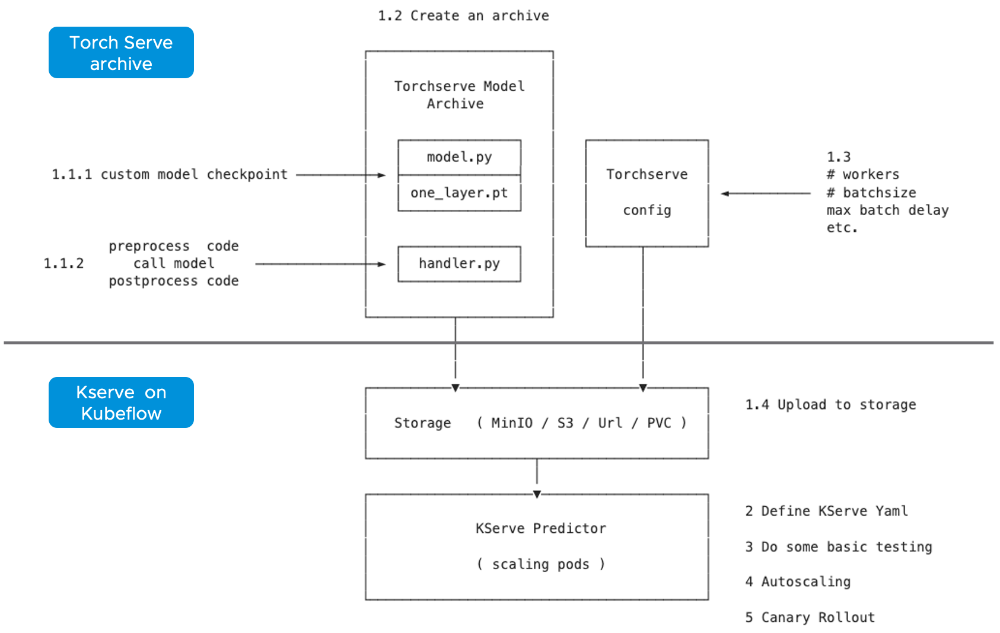

Model Serving with Kubeflow KServe¶
Goal¶
The InferenceService custom resource is the primary interface that is used for deploying models on KServe. Inside an InferenceService, users can specify multiple components that are used for handling inference requests. These components are the predictor, transformer, and explainer. For more detailed documentation on Kubeflow KServe, refer to KServe.
In this tutorial, you will deploy an InferenceService with a predictor that will load a Helemt Detection Yolov5 model trained with custom dataset, which the fine-tuning process is shown at the above experiment.
You will then send an inference request to your deployed model in order to get a detection the presence of helmets on individuals your request corresponds to.
Workflow¶
The session mainly covers:
PyTorch Serve: package PyTorch model with custom preprocess/postprocess functions
MinIO storage usage
KServe: inferenceservice, autoscaling, canary rollout

PyTorch Serve¶
Learn more about torchscript here: TorchScript.
Prepartion for Model Archiver¶
Firstly, the data scientist should prepare 3 files:
helmet.pt: fine-tuning the model with your own data and save the parameters
helmet.torchscript.pt: a serialized file (.pt or .pth) should be a checkpoint in case of torchscript and state_dict in case of eager mode.
handler.py: codes for model initialization, pre-processing, post-processing, etc.
"""Custom TorchServe model handler for YOLOv5 models (model_handler.py)
BaseHandler: https://github.com/pytorch/serve/blob/master/ts/torch_handler/base_handler.py
"""
from ts.torch_handler.base_handler import BaseHandler
import numpy as np
import base64
import torch
import torchvision.transforms as tf
import torchvision
import io
from PIL import Image
import warnings
class ModelHandler(BaseHandler):
"""
A custom model handler implementation.
"""
img_size = 640
"""Image size (px). Images will be resized to this resolution before inference.
"""
def __init__(self):
# call superclass initializer
super().__init__()
self._context = None
self.initialized = False
self.batch_size = 1
self.img_size = 640
def preprocess(self, data):
"""Converts input images to float tensors.
Args:
data (List): Input data from the request in the form of a list of image tensors.
Returns:
Tensor: single Tensor of shape [BATCH_SIZE, 3, IMG_SIZE, IMG_SIZE]
"""
images = []
transform = tf.Compose([
tf.ToTensor(),
tf.Resize((self.img_size, self.img_size))
])
# Method 1
# image = data[0].get("data") or data[0].get("body")
image = data[0]
if image is None:
warnings.warn("data params is none")
raise Exception("no data")
else:
if isinstance(image, str):
# if the image is a string of bytesarray.
image = base64.b64decode(image)
# If the image is sent as bytesarray
if isinstance(image, (bytearray, bytes)):
image = Image.open(io.BytesIO(image))
else:
# if the image is a list
image = torch.FloatTensor(image)
# force convert to tensor
# and resize to [img_size, img_size]
image = transform(image)
images.append(image)
# convert list of equal-size tensors to single stacked tensor
# has shape BATCH_SIZE x 3 x IMG_SIZE x IMG_SIZE
images_tensor = torch.stack(images).to(self.device)
return images_tensor
def postprocess(self, inference_output):
# perform NMS (nonmax suppression) on model outputs
pred = non_max_suppression(inference_output[0])
# initialize empty list of detections for each image
detections = [[] for _ in range(len(pred))]
for i, image_detections in enumerate(pred): # axis 0: for each image
for det in image_detections: # axis 1: for each detection
# x1,y1,x2,y2 in normalized image coordinates (i.e. 0.0-1.0)
xyxy = det[:4] / self.img_size
# confidence value
conf = det[4].item()
# index of predicted class
class_idx = int(det[5].item())
# get label of predicted class
# if missing, then just return class idx
label = self.mapping.get(str(class_idx), class_idx)
detections[i].append({
"x1": xyxy[0].item(),
"y1": xyxy[1].item(),
"x2": xyxy[2].item(),
"y2": xyxy[3].item(),
"confidence": conf,
"class": label
})
# format each detection
return detections
def non_max_suppression(prediction, conf_thres=0.25, iou_thres=0.45, classes=None, agnostic=False, multi_label=False,
labels=(), max_det=300):
"""Runs Non-Maximum Suppression (NMS) on inference results
Returns:
list of detections, on (n,6) tensor per image [xyxy, conf, cls]
"""
nc = prediction.shape[2] - 5 # number of classes
xc = prediction[..., 4] > conf_thres # candidates
# Checks
assert 0 <= conf_thres <= 1, f'Invalid Confidence threshold {conf_thres}, valid values are between 0.0 and 1.0'
assert 0 <= iou_thres <= 1, f'Invalid IoU {iou_thres}, valid values are between 0.0 and 1.0'
# Settings
# (pixels) minimum and maximum box width and height
min_wh, max_wh = 2, 4096
max_nms = 30000 # maximum number of boxes into torchvision.ops.nms()
time_limit = 10.0 # seconds to quit after
redundant = True # require redundant detections
multi_label &= nc > 1 # multiple labels per box (adds 0.5ms/img)
merge = False # use merge-NMS
output = [torch.zeros((0, 6), device=prediction.device)
] * prediction.shape[0]
for xi, x in enumerate(prediction): # image index, image inference
# Apply constraints
# x[((x[..., 2:4] < min_wh) | (x[..., 2:4] > max_wh)).any(1), 4] = 0 # width-height
x = x[xc[xi]] # confidence
# Cat apriori labels if autolabelling
if labels and len(labels[xi]):
l = labels[xi]
v = torch.zeros((len(l), nc + 5), device=x.device)
v[:, :4] = l[:, 1:5] # box
v[:, 4] = 1.0 # conf
v[range(len(l)), l[:, 0].long() + 5] = 1.0 # cls
x = torch.cat((x, v), 0)
# If none remain process next image
if not x.shape[0]:
continue
# Compute conf
x[:, 5:] *= x[:, 4:5] # conf = obj_conf * cls_conf
# Box (center x, center y, width, height) to (x1, y1, x2, y2)
box = xywh2xyxy(x[:, :4])
# Detections matrix nx6 (xyxy, conf, cls)
if multi_label:
i, j = (x[:, 5:] > conf_thres).nonzero(as_tuple=False).T
x = torch.cat((box[i], x[i, j + 5, None], j[:, None].float()), 1)
else: # best class only
conf, j = x[:, 5:].max(1, keepdim=True)
x = torch.cat((box, conf, j.float()), 1)[
conf.view(-1) > conf_thres]
# Filter by class
if classes is not None:
x = x[(x[:, 5:6] == torch.tensor(classes, device=x.device)).any(1)]
# Apply finite constraint
# if not torch.isfinite(x).all():
# x = x[torch.isfinite(x).all(1)]
# Check shape
n = x.shape[0] # number of boxes
if not n: # no boxes
continue
elif n > max_nms: # excess boxes
# sort by confidence
x = x[x[:, 4].argsort(descending=True)[:max_nms]]
# Batched NMS
c = x[:, 5:6] * (0 if agnostic else max_wh) # classes
# boxes (offset by class), scores
boxes, scores = x[:, :4] + c, x[:, 4]
i = torchvision.ops.nms(boxes, scores, iou_thres) # NMS
if i.shape[0] > max_det: # limit detections
i = i[:max_det]
if merge and (1 < n < 3E3): # Merge NMS (boxes merged using weighted mean)
# update boxes as boxes(i,4) = weights(i,n) * boxes(n,4)
iou = torchvision.box_iou(
boxes[i], boxes) > iou_thres # iou matrix
weights = iou * scores[None] # box weights
x[i, :4] = torch.mm(weights, x[:, :4]).float(
) / weights.sum(1, keepdim=True) # merged boxes
if redundant:
i = i[iou.sum(1) > 1] # require redundancy
output[xi] = x[i]
return output
def xywh2xyxy(x):
# Convert nx4 boxes from [x, y, w, h] to [x1, y1, x2, y2] where xy1=top-left, xy2=bottom-right
y = x.clone() if isinstance(x, torch.Tensor) else np.copy(x)
y[:, 0] = x[:, 0] - x[:, 2] / 2 # top left x
y[:, 1] = x[:, 1] - x[:, 3] / 2 # top left y
y[:, 2] = x[:, 0] + x[:, 2] / 2 # bottom right x
y[:, 3] = x[:, 1] + x[:, 3] / 2 # bottom right y
return y
Torchserve Model Archiver¶
It basically create a tar called {model-name}.mar from model-file, serialized-file, handler
%%bash
cd $(dirname $0)/torchserve
base_path=$(pwd)
mkdir -p $base_path/model-store && cd $base_path/model-store &&
if [ -f $base_path/model-store/helmet_detection.mar ]; then
rm $base_path/model-store/helmet_detection.mar
fi
pip install torch-model-archiver -i https://pypi.tuna.tsinghua.edu.cn/simple
torch-model-archiver --model-name helmet_detection \
--version 0.1 --serialized-file $base_path/helmet.torchscript.pt \
--handler $base_path/torchserve_handler.py \
--extra-files $base_path/index_to_name.json,$base_path/torchserve_handler.py
echo "create successfully"
The more detailed instruction you can refer to helmet_yolov5_torchserve
Create Torchserve Config¶
Feel free to change the parameters:
minWorkers: the minimum number of workers of a model
maxWorkers: the maximum number of workers of a model
batchSize: the batch size of a model
maxBatchDelay: the maximum dalay in msec of a batch of a model
responseTimeout: the timeout in msec of a model’s response
defaultVersion: the default version of a model
marName: the mar file name of a model
inference_address=http://0.0.0.0:8085
management_address=http://0.0.0.0:8081
metrics_address=http://0.0.0.0:8082
grpc_inference_port=7070
grpc_management_port=7071
enable_metrics_api=true
metrics_format=prometheus
number_of_netty_threads=4
job_queue_size=10
enable_envvars_config=true
install_py_dep_per_model=true
model_store=/home/model-server/torchserve_mar/helmet_detection/model-store
model_snapshot={"name":"startup.cfg","modelCount":1,"models":{"helmet_detection":{"1.0":{"defaultVersion":true,"marName":"helmet_detection.mar","minWorkers":1,"maxWorkers":5,"batchSize":4,"maxBatchDelay":100,"responseTimeout":120}}}}
MinIO¶
Create and Upload to MinIO¶
If you already have the minio storage, you can directly follow the next steps. If not, we also provide a standalone minio deployment guide on the kubernetes clusters.
You can use the MinIO Deployment Guide to apply in your clusters.
This step uploads torchserve/model-store, torchserve/config to MinIO buckets
You need to find the MINIO
endpoint_url
key_id
access_key
import os
from urllib.parse import urlparse
import boto3
os.environ["AWS_ENDPOINT_URL"] = "http://10.117.233.16:9000"
os.environ["AWS_REGION"] = "us-east-1"
os.environ["AWS_ACCESS_KEY_ID"] = "minioadmin"
os.environ["AWS_SECRET_ACCESS_KEY"] = "minioadmin"
s3 = boto3.resource('s3',
endpoint_url=os.getenv("AWS_ENDPOINT_URL"),
verify=True)
print("current buckets in s3:")
print(list(s3.buckets.all()))
bucket_name='helmet-bucket'
s3.create_bucket(Bucket=bucket_name)
curr_path = os.getcwd()
base_path = os.path.join(curr_path, "torchserve")
bucket_path = "helmet_detection"
bucket = s3.Bucket(bucket_name)
# upload
bucket.upload_file(os.path.join(base_path, "model-store", "helmet_detection.mar"),
os.path.join(bucket_path, "model-store/helmet_detection.mar"))
bucket.upload_file(os.path.join(base_path, "config", "config.properties"),
os.path.join(bucket_path, "config/config.properties"))
# check files
for obj in bucket.objects.filter(Prefix=bucket_path):
print(obj.key)
Create Minio Service Account and Secret¶
You will also need to specify the s3-endpoint, AWS_ACCESS_KEY_ID, AWS_SECRET_ACCESS_KEY here If you are using default user user@exampe.com/12341234, please also set a different name for all the metadata: name in the yaml file.
cat << EOF | kubectl apply -f -
apiVersion: v1
kind: Secret
metadata:
name: minio-s3-secret-user
annotations:
serving.kserve.io/s3-endpoint: "10.117.233.16:9000" # replace with your s3 endpoint e.g minio-service.kubeflow:9000
serving.kserve.io/s3-usehttps: "0" # by default 1, if testing with minio you can set to 0
serving.kserve.io/s3-region: "us-east-2"
serving.kserve.io/s3-useanoncredential: "false" # omitting this is the same as false, if true will ignore provided credential and use anonymous credentials
type: Opaque
stringData: # use "stringData" for raw credential string or "data" for base64 encoded string
AWS_ACCESS_KEY_ID: minioadmin
AWS_SECRET_ACCESS_KEY: minioadmin
---
apiVersion: v1
kind: ServiceAccount
metadata:
name: minio-service-account-user
secrets:
- name: minio-s3-secret-user
EOF
kserve¶
Create InferenceService¶
KServe provides built-in serving runtimes to deploy models trained in common ML frameworks. These allow you to deploy your models into a robust infrastructure by just pointing to where the model artifacts are stored remotely.
The InferenceService manifest gives you full control over the containers used to deploy your machine learning model, we could write an InferenceService manifest like the one below:
cat << EOF | kubectl apply -f -
apiVersion: "serving.kserve.io/v1beta1"
kind: "InferenceService"
metadata:
name: "helmet-detection-serving"
spec:
predictor:
serviceAccountName: minio-service-account-user
model:
modelFormat:
name: pytorch
storageUri: "s3://helmet-bucket/helmet_detection"
resources:
requests:
cpu: 50m
memory: 200Mi
limits:
cpu: 100m
memory: 500Mi
# limits:
# nvidia.com/gpu: "1" # for inference service on GPU
EOF
As we can see highlighted above, the main points that we will need to take into account are:
Set storageUri to your bucket_name/bucket_path
You may also need to change metadata: name and serviceAccountName
Check the InferenceService¶
Once your InferenceService is applied ready to your cluster . Run the following cell to get host through kubectl, which will be set to the headers in our request
kubectl get inferenceservice helmet-detection-serving -o jsonpath='{.status.url}' | cut -d "/" -f 3
Define a Test_bot for convenience, and determine host and session
import requests
import json
import multiprocess as mp
import io
import base64
import PIL.Image as Image
# from PIL import Image
class Test_bot():
def __init__(self, uri, model, host, session):
self.uri = uri
self.model = model
self.host = host
self.session = session
self.headers = {'Host': self.host, 'Content-Type': "image/jpeg", 'Cookie': "authservice_session=" + self.session}
self.img = './1.jpg'
def update_uri(self, uri):
self.uri = uri
def update_model(self, model):
self.model = model
def update_host(self, host):
self.host = host
self.update_headers()
def update_session(self, session):
self.session = session
self.update_headers()
def update_headers(self):
self.headers = {'Host': self.host, 'Content-Type': "image/jpeg", 'Cookie': "authservice_session=" + self.session}
def get_data(self, x):
if x:
payload = x
else:
payload = self.img
with open(payload, "rb") as image:
f = image.read()
image_data = base64.b64encode(f).decode('utf-8')
return json.dumps({'instances': [image_data]})
def predict(self, x=None):
uri = self.uri + '/v1/models/' + self.model + ':predict'
response = requests.request("POST", uri, headers=self.headers, data=self.get_data(x))
return response.text
def readiness(self):
# uri = self.uri + '/v1/models/' + self.model
uri = self.uri + '/v1/models/' + self.model
response = requests.get(uri, headers = self.headers, timeout=5)
return response.text
def explain(self, x=None):
uri = self.uri + '/v1/models/' + self.model + ':explain'
response = requests.post(uri, data=self.get_data(x), headers = self.headers, timeout=10)
return response.text
def concurrent_predict(self, num=10):
print("fire " + str(num) + " requests to " + self.host)
with mp.Pool() as pool:
responses = pool.map(self.predict, range(num))
return responses
Use your web browser to login to Kubeflow, and get Cookies: authservice_session (Chrome: Developer Tools -> Applications -> Cookies)
# replace it with the url you used to access Kubeflow
bot = Test_bot(uri='http://10.117.233.8',
model='helmet_detection',
# replace it with what is printed above
host='helmet-detection-serving.kubeflow-user-example-com.example.com',
# replace it
session='MTY3MDM5OTkzNnxOd3dBTkZZeU5GSkhUVE5NVGtaRk1rMVpXVVpJVlV4SFFUWkpSRFpIVmxaQ05WaERTRlpRV2xoUFRWZEpXa2hTTjB4SVFrMDNSRkU9fFWl635XpDECJSOEnzFJLOugFqIiGbIniTh0uPs0BCW1')
print(bot.readiness())
print(bot.predict('./2.jpg'))
detections = json.loads(bot.predict('./2.jpg'))
Perform Inference¶
import matplotlib.pyplot as plt
import numpy as np
def visualize_detections(image_path, detections, figsize=(8, 8)):
img = Image.open(image_path)
plt.figure(figsize=figsize)
plt.axis("off")
plt.imshow(img)
scoreArr, nameArr, boxArr = [], [], []
for detection in detections:
score = detection['confidence']
name = detection['class'] #class_names
box = [detection['x1'], detection['y1'], detection['x2'], detection['y2']] #boxes
scoreArr.append(score)
nameArr.append(name)
boxArr.append(box)
scoreArr, nameArr, boxArr = np.array(scoreArr), np.array(nameArr), np.array(boxArr)
boxes, class_names, scores = boxArr, nameArr, scoreArr
max_boxes, min_score = 18, 0.1
score_split_w = 0.1 # 0.95~1.00
score_split_r = 0.1 #0.90~0.95
for i in range(min(boxes.shape[0], max_boxes)):
if scores[i] >= min_score:
xmin, ymin, xmax, ymax = tuple(boxes[i])
ax = plt.gca()
text = "{}: {:.2f}".format(class_names[i], (scores[i]))
w, h = xmax - xmin, ymax - ymin
xmin *= 800
ymin *= 500
w *= 800
h *= 500
if class_names[i] == 'person':
patch = plt.Rectangle(
[xmin, ymin], w, h, fill=False, edgecolor='w', linewidth=3
)
else:
patch = plt.Rectangle(
[xmin, ymin], w, h, fill=False, edgecolor='c', linewidth=3
)
ax.add_patch(patch)
if class_names[i] == 'person':
ax.text(
xmin,
ymin,
text,
bbox={"facecolor": 'w', "alpha": 1.0},
clip_box=ax.clipbox,
clip_on=True,
)
else:
ax.text(
xmin,
ymin,
text,
bbox={"facecolor": 'c', "alpha": 0.8},
clip_box=ax.clipbox,
clip_on=True,
)
plt.show()
image_path = './2.jpg'
visualize_detections(image_path, detections['predictions'][0])
Autoscaling¶
Knative Pod Autoscaler (KPA)
Part of the Knative Serving core and enabled by default once Knative Serving is installed.
Supports scale to zero functionality.
Does not support CPU-based autoscaling.
Horizontal Pod Autoscaler (HPA)
Not part of the Knative Serving core, and must be enabled after Knative Serving installation.
Does not support scale to zero functionality.
Supports CPU-based autoscaling.
If you use CPU-based autotscaling, ake sure HPA is installed before move on (check by kubectl get deploy autoscaler-hpa -n knative-serving), will need to install it from https://github.com/knative/serving/releases/
Add autoscaling tag to the InferenceService and apply
%%bash
cat << EOF | kubectl apply -f -
apiVersion: serving.kserve.io/v1beta1
kind: InferenceService
metadata:
name: helmet-detection-serving
annotations:
autoscaling.knative.dev/class: hpa.autoscaling.knative.dev
# see available tags: https://knative.dev/docs/serving/autoscaling/autoscaling-targets/
autoscaling.knative.dev/max-scale: "3"
# HPA: specifies the CPU percentage target (default "80").
# KPA: Target x requests in-flight per pod.
autoscaling.knative.dev/target: "80"
spec:
predictor:
serviceAccountName: minio-service-account-user
model:
modelFormat:
name: pytorch
storageUri: "s3://helmet-bucket/helmet_detection"
resources:
requests:
cpu: 50m
memory: 200Mi
limits:
cpu: 100m
memory: 500Mi
EOF
Canary Rollout¶
%%bash
cat << EOF | kubectl apply -f -
apiVersion: serving.kserve.io/v1beta1
kind: InferenceService
metadata:
name: helmet-detection-serving
annotations:
autoscaling.knative.dev/class: hpa.autoscaling.knative.dev
autoscaling.knative.dev/target: "80"
serving.kserve.io/enable-tag-routing: "true"
spec:
predictor:
serviceAccountName: minio-service-account-user
model:
modelFormat:
name: pytorch
storageUri: "s3://helmet-bucket/helmet_detection"
resources:
requests:
cpu: 50m
memory: 200Mi
limits:
cpu: 100m
memory: 500Mi
EOF